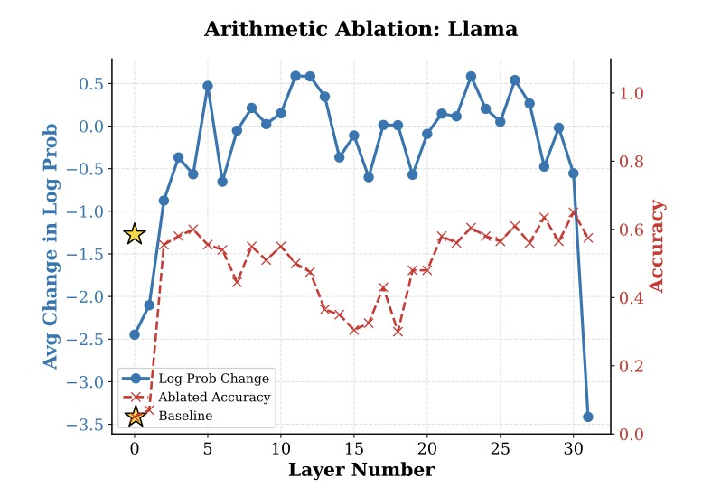
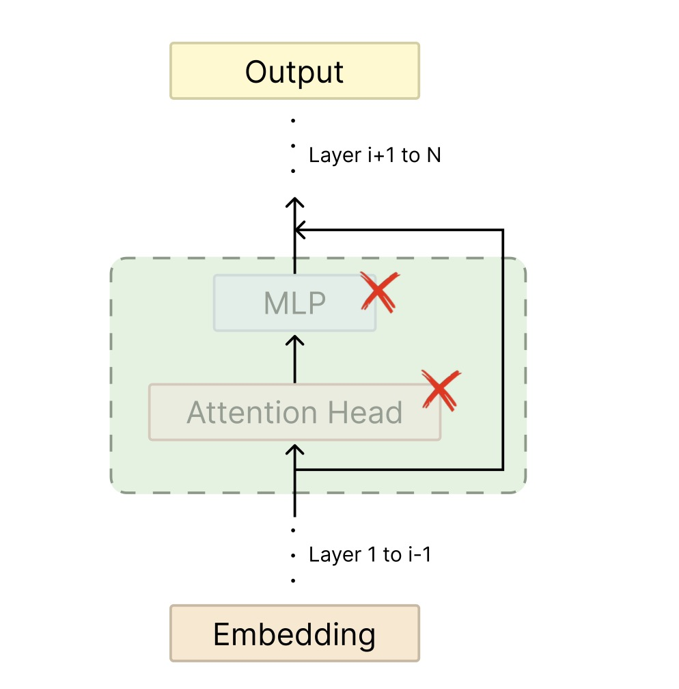
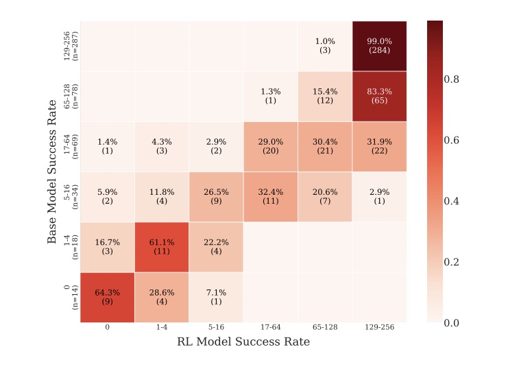
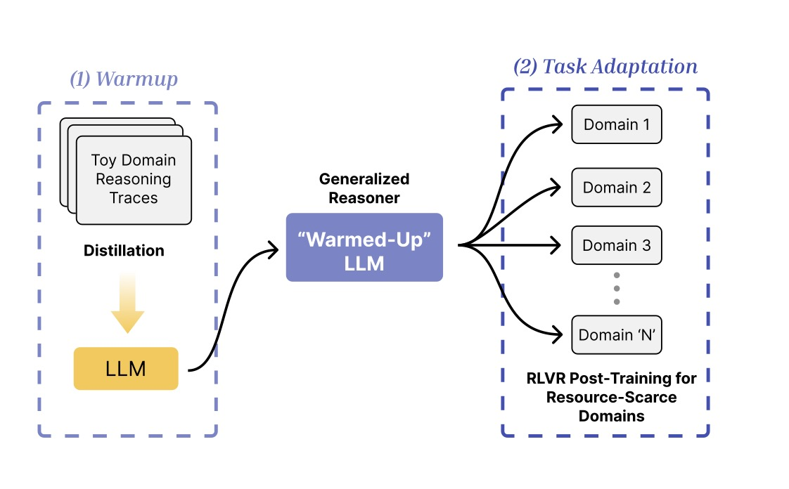
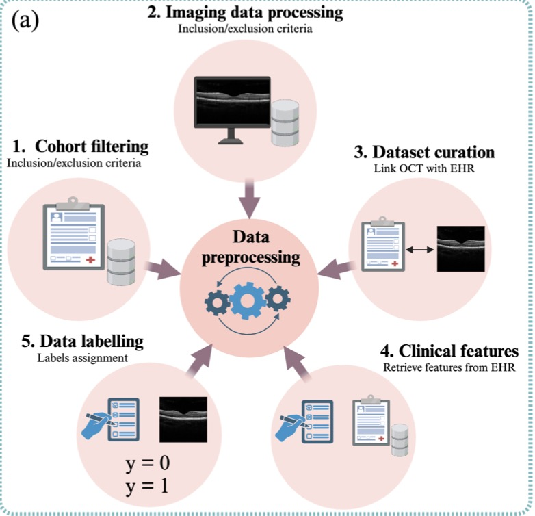

|
Aadim Nepal
I am a senior undergraduate studying Mathematics and Computer Science at NYU Abu Dhabi, where I work with Professor Keith Ross on energy-based world models.
Previously, I worked on LLM reasoning and interpretability. Currently, I focus on how to get systems to learn from the physical world. I am interested in how principles from neuroscience and biology can inform the design of models that plan, predict, and generalize the way biological systems do.
Email /
CV /
Bio /
Scholar /
Twitter /
GitHub /
Miscellaneous
|
|
Research
I am interested in using model-based RL for System 2 planning. I study how systems can learn physical dynamics through self-supervised learning and world models. Much of my past work is in LLM reasoning and interpretability, but I am now focused on the foundational question of how to build human-level AI. Representative papers are highlighted.
|
|

|
On the Limits of Layer Pruning for Generative Reasoning in LLMs
Safal Shrestha, Anubhav Shrestha, Aadim Nepal, Minwu Kim, Keith Ross
arXiv, 2026
arXiv
Investigates the fundamental limits of layer pruning for maintaining generative reasoning capabilities in large language models.
|
|

|
Layer Importance for Mathematical Reasoning is Forged in Pre-Training and Invariant after Post-Training
Aadim Nepal, Safal Shrestha, Anubhav Shrestha, Minwu Kim, Jalal Naghiyev, Ravid Shwartz-Ziv, Keith Ross
The 5th Workshop on Mathematical Reasoning and AI at NeurIPS, 2025
arXiv
Math reasoning depends on a few critical layers that form during pre-training and remain stable across all post-training methods. Removing these layers reduces math accuracy by up to 80%, while factual recall shows smaller drops.
|
|

|
Reinforcement Learning vs. Distillation: Understanding Accuracy and Capability in LLM Reasoning
Minwu Kim, Anubhav Shrestha, Safal Shrestha, Aadim Nepal, Keith Ross
The 5th Workshop on Mathematical Reasoning and AI at NeurIPS, 2025
arXiv
RLVR improves accuracy on easier questions but struggles with capability, while distillation can improve both—but only when new knowledge is introduced.
|
|

|
Warm Up Before You Train: Unlocking General Reasoning in Resource-Constrained Settings
Safal Shrestha, Minwu Kim, Aadim Nepal, Anubhav Shrestha, Keith Ross
EMNLP, 2025
arXiv
A two-stage training strategy that warms up with simple logic puzzles before applying RLVR, enabling sample-efficient reasoning under limited supervision.
|
|

|
Multimodal Deep Learning for Stroke Prediction and Detection using Retinal Imaging and Clinical Data
Saeed Shurrab, Aadim Nepal, Terrence J. Lee-St. John, Nicola G. Ghazi, Bart Piechowski-Jozwiak, Farah Shamout
EMBC, 2025
arXiv
A multimodal deep neural network combining OCT and infrared retinal scans with clinical data for stroke prediction, achieving 5% AUROC improvement over image-only baselines and 8% over existing foundation models.
|
|
{kind=link}